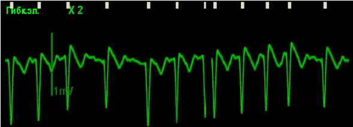
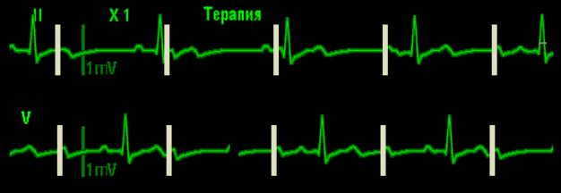

1. Убедитесь в безопасности! Во избежание угрозы взрыва при кардиостимуляции пациента, которому подается кислород для дыхания, правильно прокладывайте кислородную трубку. Держите ее подальше от многофункциональных гибких электродов.
2. Премедикация с целью седации – Sol. Diazepami 0,5% – 2-6 ml (начать с 2 ml в/в, в дальнейшем титруя для поддержания седации, с целью анальгезии – Sol. Promedoli 2% – 1 ml. В экстренной ситуации начать стимуляцию немедленно, седацию и обезболивание выполнить по ходу стимуляции.
3. Наладить мониторинг (НИАД, SpO2), получить надежный венозный доступ.
4. Наложить одноразовые клеящиеся электроды стимуляции (гибкие электроды) в соответствии с инструкцией в передне-боковую или передне-заднюю (предпочтительно) позицию, 5 электродов ЭКГ (обязательно, без них мониторинг ЭКГ невозможен – ЭКС в режиме по запросу будет недоступна).
5. Отсоединить кабель утюжковых электродов и вставить кабель гибких электродов в разъем до щелчка. Подсоединить разъемы гибких электродов к кабелю электродов.
6. Переключить дефибриллятор на функцию кардиостимуляции (режим «Кардиос»), по умолчанию активирован режим по запросу (режим не менять, фиксированный только при асистолии), оценить ритм по монитору, убедившись в показаниях к проведению процедуры.
7. Выберите отведение с легко распознаваемым зубцом R. Над каждым зубцом R должен появиться маркер зубца R, как показано на приведенном ниже рисунке. Если маркеры зубцов R отсутствуют или не совпадают с зубцами R (например, располагаются над зубцами T), выберите другое отведение.

8. При включении режима кардиостимуляции частота стимуляции по умолчанию 70 в мин. – не менять (или установить в зависимости от гемодинамики 60-90 в мин.), сила тока – 30 мА. Чтобы запустить кардиостимуляцию, нажмите сенсорную клавишу "Запуск кардиост". В информационной области кардиостимуляции появится сообщение "Идет кардиост".
9. При каждой подаче импульса стимуляции пациенту на кривой ЭКГ отображается белый маркер стимуляции. Если применяется стимуляция по запросу, то на кривой ЭКГ отображается также маркер зубца R, пока не произойдет захват. В режиме кардиостимуляции по запросу возможно присутствие самопроизвольных сердцебиений, не связанных с подачей импульса стимуляции. Если ЧСС пациента превышает частоту кардиостимулятора, импульсы стимуляции не подаются и, следовательно, маркеры стимуляции не появляются.

10. Поворачивая регулятор, постепенно увеличивать силу тока до захвата импульсов желудочками (как правило 50-70 мА. Признаки захвата импульсов: расширение комплекса QRS и появление широкого зубца T на ЭКГ после каждого белого маркера (электрический захват).
11. Пропальпировать пульс на лучевых артериях. Его соответствие частоте стимуляции свидетельствует о механическом захвате. Стимуляция достигается.
12. Увеличить силу тока еще на 2 мА.
13. Провести мониторинг НИАД, SpO2, следить за частотой и характером дыхания, периодически (каждые 1-2 мин.) пальпировать пульс (проверять механический захват).
14. При потере механического захвата увеличить ток стимуляции до достижения эффекта.
Примечания:
1. Нажав и удерживая функциональную клавишу [4:1], можно временно задержать подачу импульса стимуляции и понаблюдать за ритмом пациента. В этом случае импульс стимуляции будет подаваться с частотой, равной ¼ заданной частоты кардиостимулятора. Для возобновления кардиостимуляции с заданной частотой отпустите клавишу.
2. В режиме кардиостимулятора доступны тревоги по следующим аритмиям: асистолия, желудочковая фибрилляция и желудочковая тахикардия.
При переходе в асистолию во время проведения ЭКС:
1. Sol. Adrenalini 0,1% – 1 ml в разведении на 10 ml 0,9% NaCl внутривенно.
2. Переключить режим работы в фиксированный, при помощи регулятора установить максимальную силу тока (200 мА), частоту 80 в минуту.
3. При отсутствии эффекта от ЭКС в течение 2-х минут, рекомендуется перейти к более эффективному методу реанимации – закрытому массажу сердца с ручной вентиляцией мешком Амбу 30:2, выполнять протокол «Асистолия».